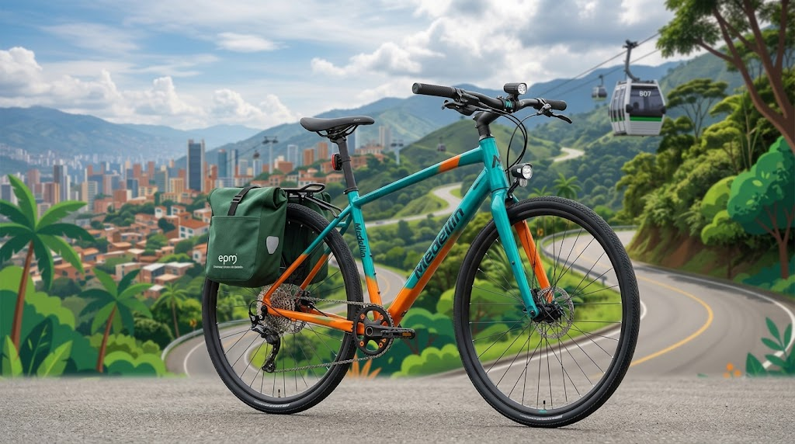
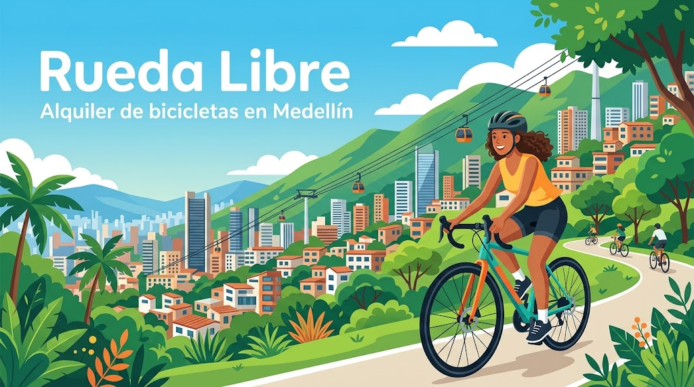
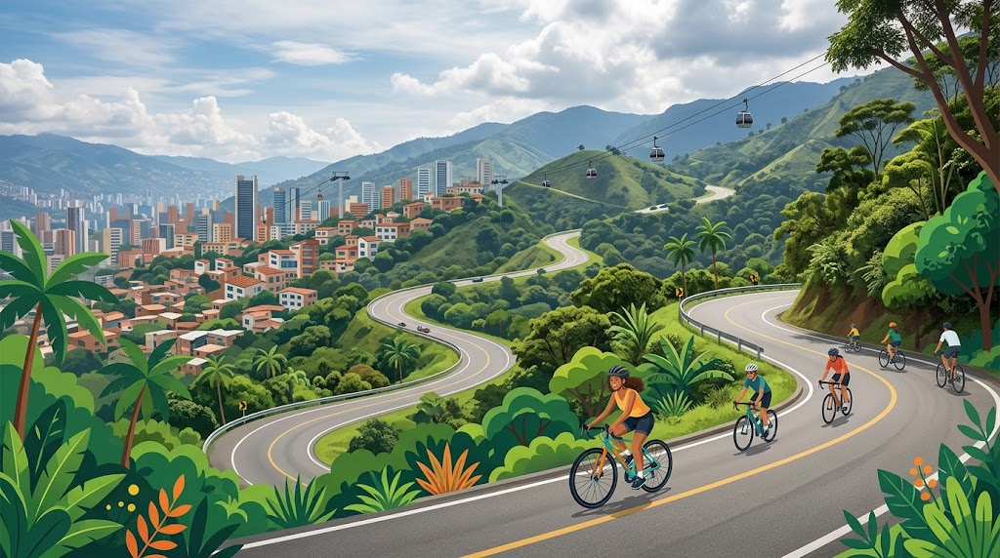

Alquiler de bicicletas urbanas

Ideal para recorrer Medellín, ir a estudiar o desplazarte por la ciudad sin depender de otros medios de transporte.
Incluye casco y candado para que puedas disfrutar del recorrido con mayor seguridad.Bienvenidos a la página #1 en alquiler de bicicletas, mira cómo contactarnos.
Somos Rueda Libre, un servicio de alquiler de bicicletas en Medellín que busca ofrecer una alternativa práctica y sostenible para recorrer la ciudad. Queremos que las personas disfruten de nuevos lugares y se movilicen de una manera diferente.

Ideal para recorrer Medellín, ir a estudiar o desplazarte por la ciudad sin depender de otros medios de transporte.
Incluye casco y candado para que puedas disfrutar del recorrido con mayor seguridad.
Pensadas para terrenos más exigentes, con caminos irregulares y subidas.
Incluye casco y candado.
Conoce Medellín sobre dos ruedas con un guía que te acompaña durante todo el recorrido. Hay tres rutas, de nivel fácil, medio y difícil, y salen los sábados y domingos.
Ver precios de recorridos guiadosMantén tu bicicleta lista para rodar. En nuestro taller realizamos ajustes y mantenimientos sencillos para que pedalees con tranquilidad.
Revisión básica de frenos, llantas y cadena.